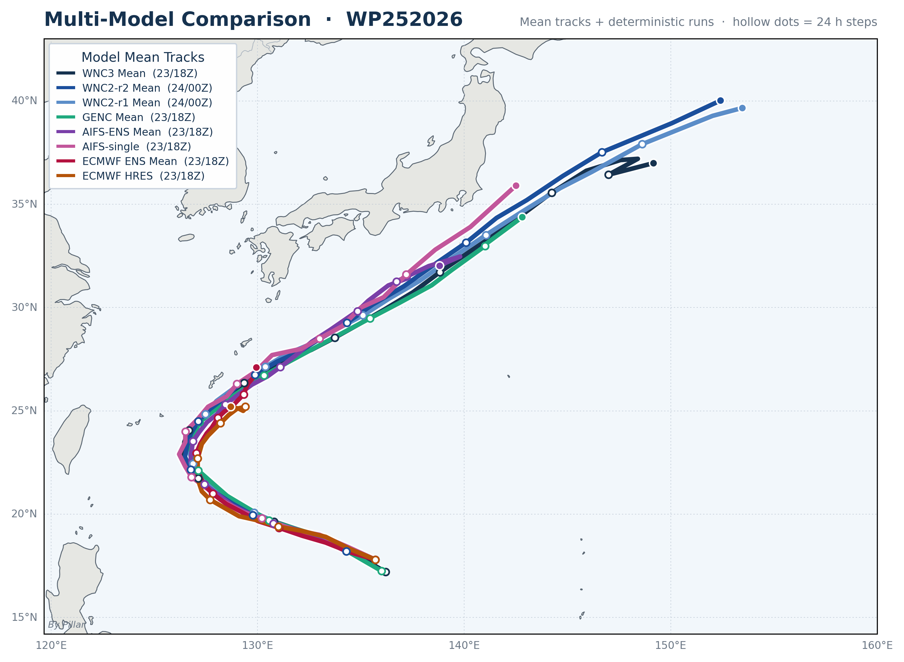
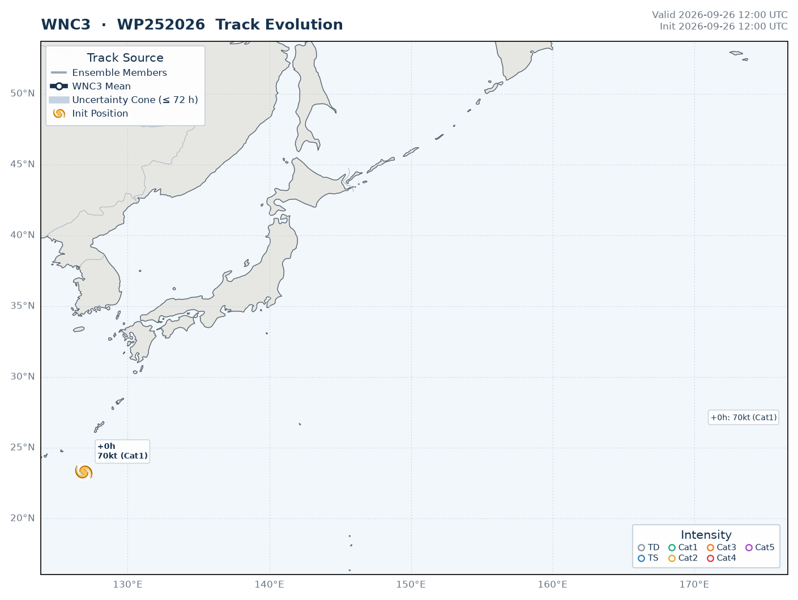
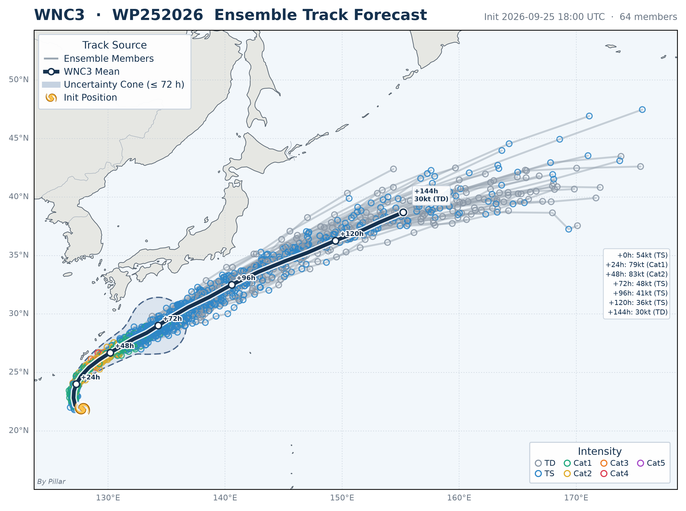
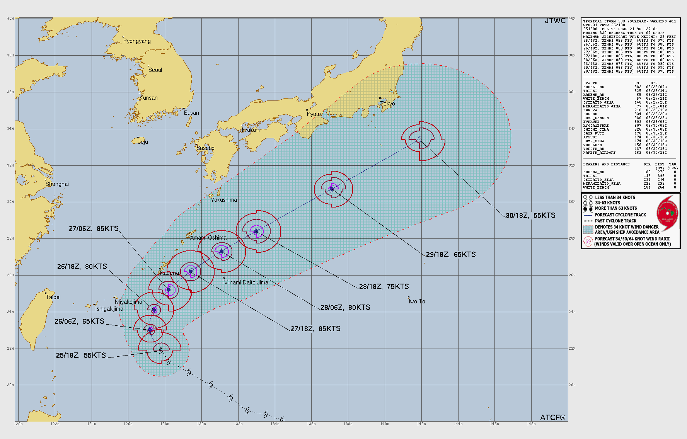

SURIGAE
TS TS ·35 kt ·18.2°N, 134.3°E
1 active system(s) · ensemble guidance from 6 models, refreshed every 30 minutes.
Active systems
Genesis potential
Forecast models
SURIGAE

🔍 Click to enlargeEnsemble mean tracks and deterministic runs from every model on one map · Hollow dots = 24-hr steps · Parentheses in the legend give each model's initialization time (day/hour Z)


🔍 Click to enlargeWNC3 · Gray lines = ensemble members · Navy line = ensemble mean · Shaded cone = track uncertainty · Dots = 6-hr intensity (filled ≥ 34 kt) · ★ = initial position

🔍 Click to enlargeSource: Joint Typhoon Warning Center (JTWC) — U.S. Navy & Air Force
Western Pacific Tropical Cyclone Genesis Potential — Ensemble Overview
 🔍 Click to enlarge
🔍 Click to enlargeCircles = ensemble members at each 6-hr step, colored by minimum sea level pressure. Gray lines = individual ensemble tracks (0–360 h). Data sourced from Google DeepMind WNC3.


How to read this site
This site gathers AI and physics-based ensemble forecasts for Western Pacific tropical cyclones and redraws them on a common style every 30 minutes, next to the official JTWC forecast.
Multi-Model Comparison
Ensemble Track Forecast
Track Evolution Animation
Genesis
Not for operational use. For official warnings, follow your national meteorological agency.